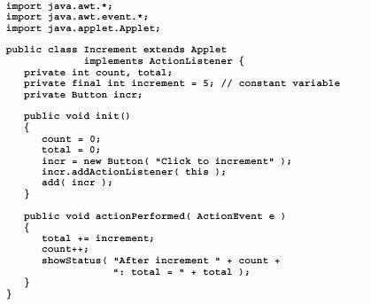

Práctica 6
Objetivo:
Con está práctica el alumno confirmará los conocimientos adquiridos sobre interfaces y será capaz de implementar en sus aplicaciones y applets sus propias interfaces.
Introducción:
Las interfaces son un medio para simular en
JAVA la herencia múltiple que en otros lenguajes como C++ permite que una subclase herede de más de una superclase; podemos decir que ellas juegan un papel importante en el desempeño de los programas escritos en este lenguaje. Al crear una interfaz el programador puede despreocuparse como será el desempeño de esta, así como de su implementación; el desarrollo tendrá que realizarlo aquel programador que quiera utilizar la interfaz. Una de las características más fuertes de estas es que podemos pensarlas de tal forma que sean un molde para que quien las utilice les dé él toque personal y trabajen según el algoritmo o el programador que las implante, cabe señalar que si dos clases que no tienen nada que ver una con la otra pueden implantar la interfaz de forma distinta según sea necesario.La declaración de una interface se lleva a cabo de la siguiente manera:
Acceso interface NombreInterface {Acceso Tipo VariavleGlobal2;
Acceso Tipo Metodo1( Argumentos ); // firma del Método1
Acceso Tipo Metodo2( Argumentos ); // firma del Método2
De la declaración anterior se puede observar que Acceso es de tipo public tanto para la interface como para las variables globales (que también son de tipo final y static) y para los métodos que solo son las firmas de ellos (sin implementación).
Las clases que quieran implementar el uso de una interface deberán utilizar la palabra clave implements de la siguiente forma:
class NombreDeClase implements NombreInterface {Tipo VariableInstancia2 = VariableGlobal2;
Public Tipo Metodo1( Argumentos )
{
// Código del método 1 (implementación)
}
Public Tipo Metodo2( Argumentos )
{
// Código del método 2 (implementación)
}
}
Cuando se implanta la interfaz en cualquier clase, hay que implementar todos las firmas de ella, ya que de no hacerlo la clase se convierte en abstracta, también hay que recordar que todos los métodos implementados en las clase deben tener acceso público.
Desarrollo de la práctica:
1.- Del siguiente código, explique brevemente que hace y que ocurre cuando se ejecuta, investigue que método de la interfaz se está implementando aquí. Ya sabe como trabaja un applet.

2.- Del siguiente programa compile, ejecute y verifique su funcionamiento para realizar una interface con los métodos Intercambiar(), GererarNumeroAleatorio(), Ordenar() y para que una clase implemente la interfaz, genere la clase correspondiente para trabajar con la función principal.
class burbuja {{
while(--i>=0 ) {
arreglo[j] = arreglo[j+1];
arreglo[j+1] = tmp;
public static void main( String args[] )
{
System.out.println( "Antes de ordenar" );
for( int i=0; i<arreglo.length; i++ ) {
System.out.print( " " + arreglo[i] );
}
burbuja_sqrt( arreglo );
System.out.println( "Despues de ordenar" );
for( int i=0; i<arreglo.length; i++ ) {
}
3.- Para el siguiente programa haga un análisis de cómo trabaja y cree los métodos siguientes e incluya en la interfaz del ejemplo anterior estos. NOTA: Guarde los cambios en otro archivo de interfaz. Incluya un método que obtenga el primero y último número del arreglo y otro que realice el ordenamiento rápido del mismo. Trabaje para generar la clase que implemente la interfaz y su correspondiente clase para la función principal.
class ordenarapido {{
int arriba = fin;
if( inicio>=fin ) return;
int enmedio = arr[(inicio+fin)/2];
do {
while( arr[arriba]>enmedio ) arriba--;
if( abajo<= arriba ) {
arr[abajo++] = arr[arriba];
arr[arriba--] = tmp;
}
quick_sort( arr, inicio, arriba );
quick_sort( arr, abajo, fin );
public static void main( String args[] )
{
int arreglo[] = new int[30];
System.out.println( "Antes de ordenar" );
for( int i=0; i<arreglo.length; i++ ) {
System.out.print( " " + arreglo[i] );
}
System.out.println( " " );
System.out.println( "Despues de ordenar" );
for( int i=0; i<arreglo.length; i++ ) {
}
4.- Ordenamiento por selección.
Algoritmo:
Seleccione el elemento más pequeño de la matriz (o arreglo) Arr[]. Intercambiarlo por el elemento Arr[0]. Ahora la entrada más pequeña esta en la primera posición de la matriz.
Considere las posiciones de la matriz Arr[1], Arr[2], Arr[3], ........ Arr[n], seleccione el elemento más pequeño e intercámbielo por Arr[1],. Ahora las dos primeras entradas de la matriz están en orden.
Continúe este proceso hasta el último elemento de la matriz (el mayor de todos los números).
En otro programa con la nueva interfaz ampliada incluya el método correspondiente al ordenamiento por selección y cree una aplicación completa para su funcionamiento, analice que pasa con este ordenamiento.
5.- Realice un pequeño menú para realizar por entrada de teclado la selección correspondiente del método de ordenamiento y que el usuario introduzca también cuantos elementos desea ordenar.
Cuestionario.
1.- Investigue un algoritmo de ordenación por inserción y desarrolle la interfaz correspondiente para implementarlo y la aplicación completa.
2.- Introduzca los métodos del punto anterior al programa desarrollado en el punto 5 y genere el programa completo.
3.- Realice una interfaz diferente con los métodos necesarios para medir el tiempo que se tarda en ordenar cada algoritmo e imprima en pantalla ese resultado. Realice este cálculo por lo menos para 1000 elementos en la matriz.
4.- Cuales fueron sus resultados del punto anterior coméntelos detalladamente.
5.- Si usted ha implementado en C o C++ ¿Podría dar su opinión al respecto de que lenguaje trabaja más rápido con estos algoritmos?

Página relacionada 1 | Página relacionada 2 | Página relacionada 3